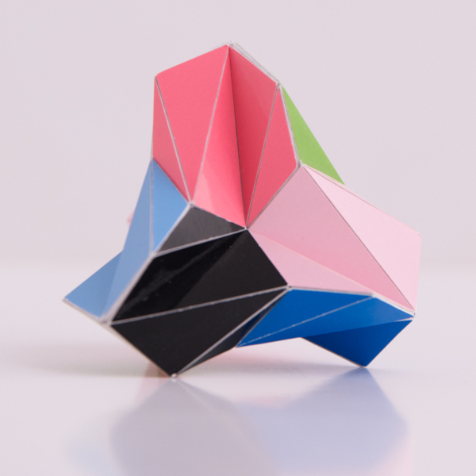

A Hepta Twister with A4 Symmetry

Picture copyright by PhotoArt Studio Hörby
This model was built in 2014 and its dimensions is around 6.5 cm x 6.5 cm x 6.5 cm.
This polyhedron only consists of regular heptagons that are folded over a diagonal. There are different ways in which you can fold a regular heptagon and for this polyhedron the folding is done in a 'W' shape.
he polyhedron only has the rotational symmetries of a tetrahedron, i.e. it doesn't have any reflections. I like these kind of symmetries that only have rotational symmetries, and they are often a bit more challenging to build, though this one is quite easy to build. The main reason being that there are no intersections, which also means that you can make a model of this if you can draw a regular heptagon.
The resulting model is quite nice, even though it isn't very rigid. It looks a bit like a 3D puzzle piece.
Last Updated
2019-10-17